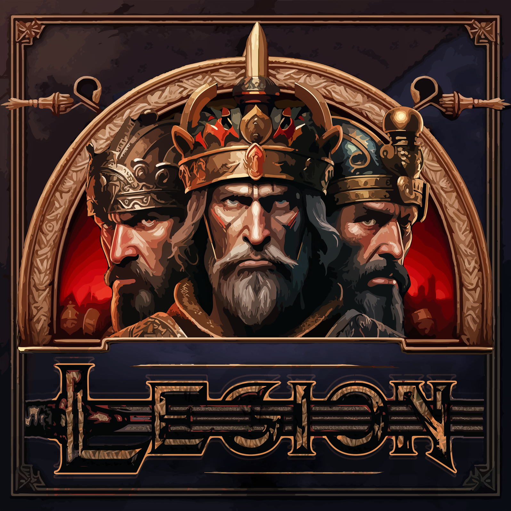

Civilizations
Military units
Build Order
Buildings
Technologies
Active Builds & Training
Build Order Timeline
| Time | Action | Food | Wood | Gold | Stone | Vills | Pop |
|---|
Worker History
Civilian Units
Buildings

| Time | Action | Food | Wood | Gold | Stone | Vills | Pop |
|---|